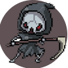

¡Cuidado con este comodin! ¿Seras capaz de sobrevivir ante los autenticos tombos?
通關
Quitar Puntos
Puede ser tan bueno como malo, no se si tengas el valor suficiente para tomarlo
隨機的
Aleatorio
Si alguna vez te encuentras en apuros por ser muy grande este comodin te ayudara
無敵
Atravesar cola
Si nunca has estado de cabeza, este comodin te demostrara como es estarlo
投資
Invertir posicion
Tiene un aspecto siniestro pero su verdadera naturaleza es bondadosa
更多積分
Aumentar puntos
Me imagino que alguna vez deseaste ser como Flash, pero creeme, la velocidad no siempre es buena
速度
Aumentar velocidad
Los grandes enemigos del país no quieren que lo salves, pero yo sé que tu eres más inteligente
降低
Reducir puntos
Tener una vida adicional siempre esta bien, y si quieres pelear contra los grandes politicos las necesitaras
生活
Una vida más
Si alguna vez te topas con este comodin deberias pensarlo bien antes de tomarlo

死亡
Bajar Vida

Arrastra para visualizar